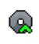
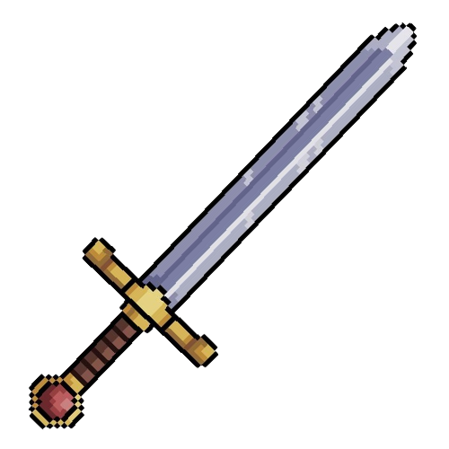
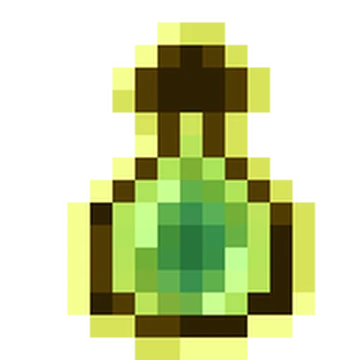

Daño base: 80
Armadura: 400
Probabilidad de desperdicio: 55%
Probabilidad de atacar de nuevo: 3%
Plus stats:
 TECHNOLOGY:
5
 5
 EXPERIENCE:
4
4
SANCTIFIED:
7
7
Costes:
Soldados expertos en combate cuerpo a cuerpo, equipados con espadas y armaduras pesadas. Son la primera línea de ataque y infligen buen daño a los enemigos en el campo de batalla.